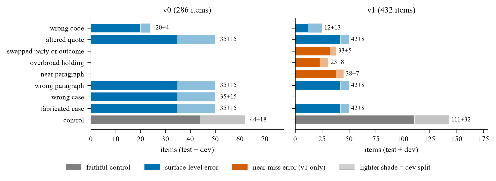
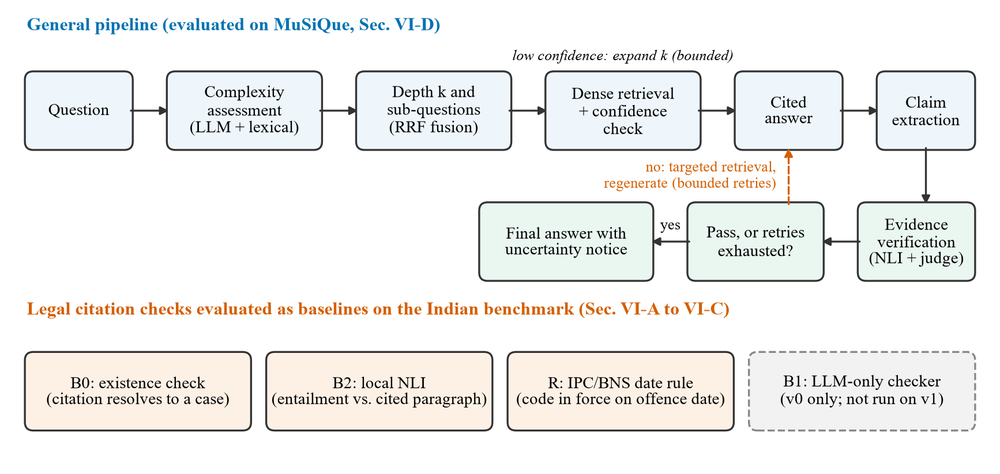
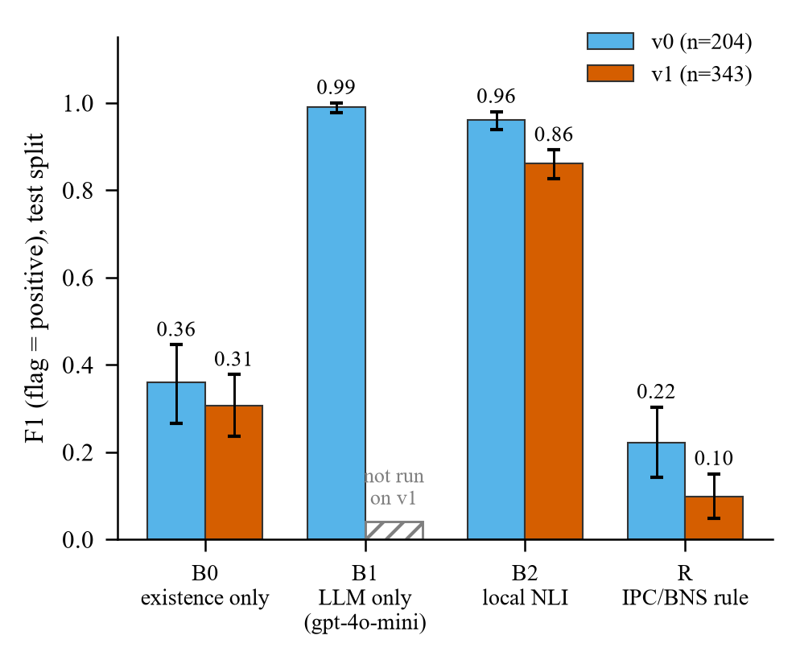
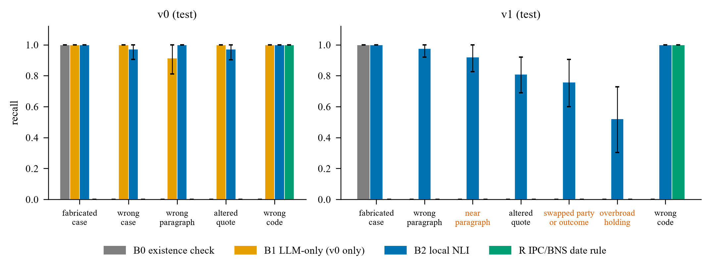
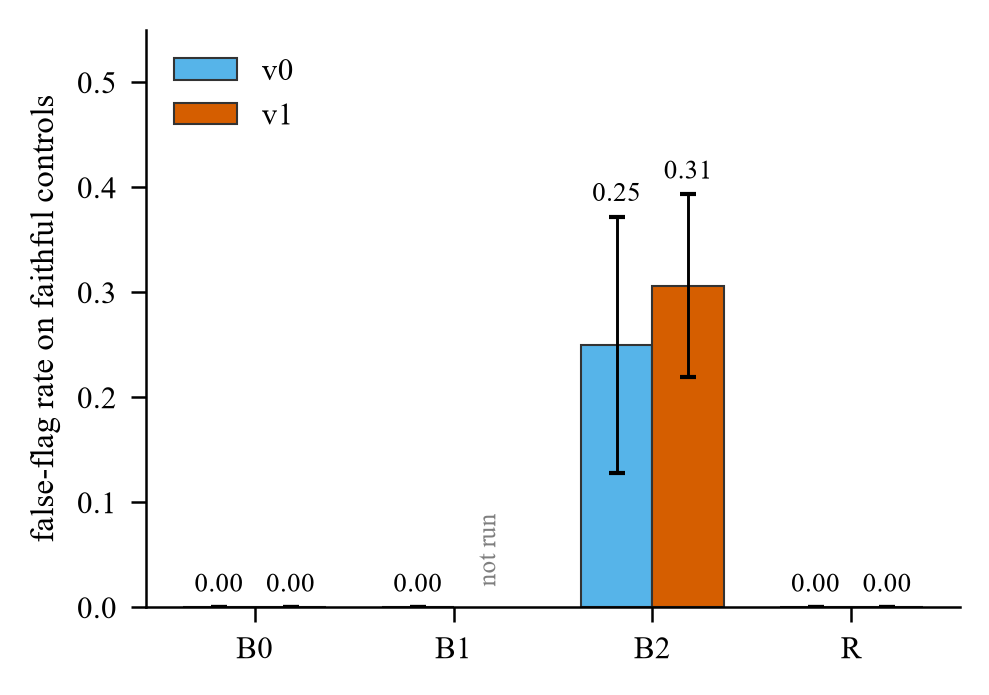
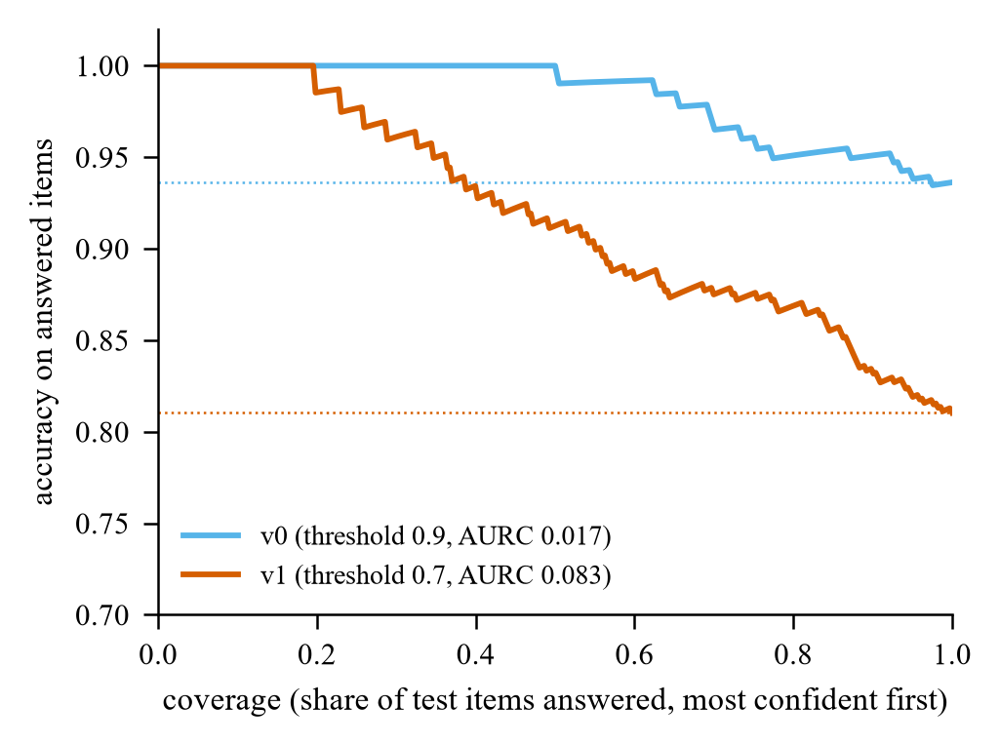
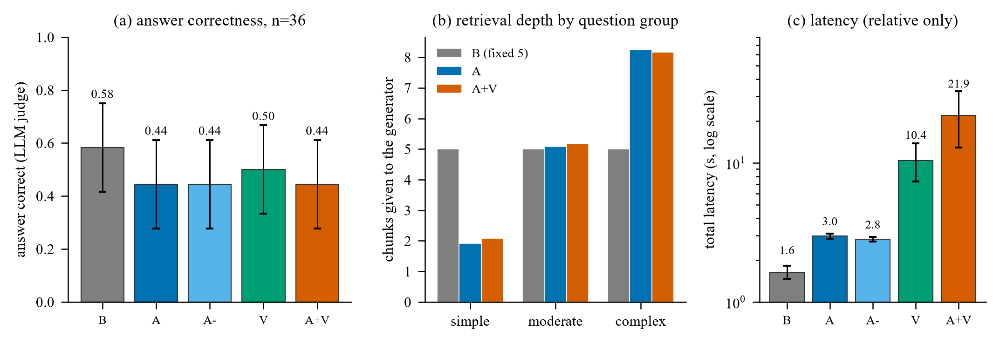
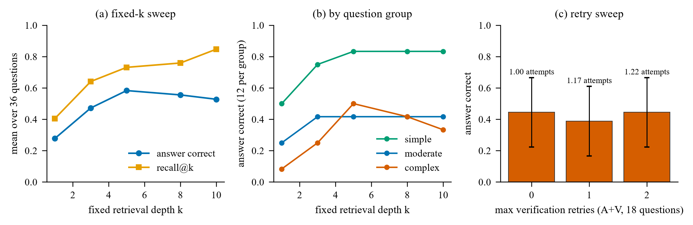
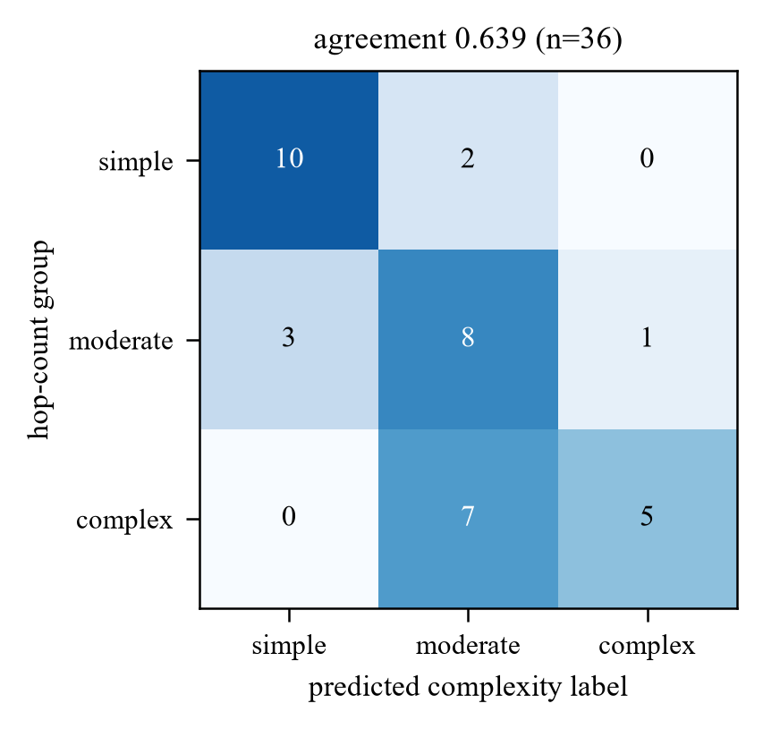

Abstract—Citations that point to a real authority which does not support the proposition they are cited for are a known failure mode of legal AI tools, and an existence lookup cannot catch them. We study this failure in an Indian setting. From 199 Supreme Court of India judgments (2023 to 2024) we build a citation-support benchmark in two versions (v0: 286 items; v1: 432 items). Each item pairs a faithful proposition with controlled corruptions: fabricated citations, wrong paragraphs, altered quotes, the wrong criminal code for the offence date, and in v1 three near-miss errors (a similar paragraph of the same judgment, an over-broad holding, swapped parties or outcome). Items are LLM-generated and labelled automatically by construction; no lawyer has validated them. We evaluate an existence check, a locally run NLI model and a date rule. The existence check catches only fabricated citations (F1 0.31 on v1). The local NLI baseline reaches F1 0.86 [0.83, 0.89] on v1, down from 0.96 on v0, but falsely flags 31% of faithful claims and recovers only 52% of over-broad holdings; answering only its most confident 20% of items raises its accuracy to 0.99. An LLM-only checker scored F1 0.99 on v0 but was not evaluated on v1, so we cannot say how hard v1 is for LLM checkers, and we claim no advantage over any prior system. Separately, we report a negative result for a general adaptive-retrieval and claim-verification pipeline: on 36 MuSiQue questions it chose retrieval depth as designed (about 2, 5 and 8 chunks for simple, moderate and complex questions) but did not improve judged answer correctness (0.444 against 0.583 for fixed top-5) and was 6.4 to 13.5 times slower with verification.
Index Terms—legal NLP, citation verification, retrieval-augmented generation, Indian law, benchmark, negative results
Retrieval-augmented legal assistants cite their sources, and users reasonably read a citation as evidence. The evidence is weaker than it looks. Magesh et al. [1] found that commercial legal research tools marketed as mitigating hallucination still produce incorrect or unsupported statements, and Verma [2] isolates a specific mechanism: a citation can point to a real case, even the right case, while the cited text does not support the proposition. Models in that study caught wrong-case substitutions almost always (93–100%) but missed many wrong-pinpoint errors (37–61% caught on court opinions), apparently accepting citations on topical overlap rather than on support. A database lookup cannot detect this.
We ask a narrower, practical question for Indian law: how much of this problem can a locally run checker catch, and how does the answer change when the errors are near misses? We build a benchmark from Supreme Court of India judgments, measure three baselines, and report what they do and do not catch. We also report, as a negative result, how a more elaborate general-purpose pipeline (complexity-adaptive retrieval plus claim verification) behaved on a standard multi-hop benchmark.
Contributions, conservatively stated. (i) A citation-support benchmark over Indian Supreme Court judgments with seven corruption types in v1 (eight across v0 and v1), including three near-miss types and a statute-code transition error specific to the 1 July 2024 replacement of the IPC by the BNS (labels automatic, not lawyer-validated). (ii) Measurements of an existence check, a local NLI model and a rule check on it, showing that the near-miss types are harder than the blunt ones, that the NLI baseline pays for its recall with many false flags, and that abstention on low-confidence items helps. (iii) A negative result for a general adaptive-and-verified RAG pipeline on 36 MuSiQue questions.
What is new and what is not. Claim-level verification, NLI-based support checking, complexity-adaptive retrieval [3] and citation-perturbation evaluation [2] are not new. What we add is the Indian setting, the near-miss types and the IPC/BNS error type, as far as we know. We did not run any LLM checker on v1 and did not compare against any prior system.
Citation support in legal AI. Verma [2] (arXiv:2608.12571; accepted to the 1st Workshop on AI for Law at ICML 2026 according to its arXiv page) perturbs real citations from court opinions and briefs, replacing the cited case or changing only the pinpoint page, and evaluates fourteen model configurations; page-level verification prompts raise recall but also false positives, and the author concludes that recognising the right legal topic and verifying support are distinct capabilities. This is our base paper. Magesh et al. [1] evaluate commercial legal research tools on a preregistered query set and find vendors' hallucination-free claims overstated. Claim auditing. GANDR [4] pairs an answer-writing agent with a critic that audits each claim against its cited source, reporting 70.8% strict accuracy on a 185-item legal benchmark and an audit F1 of 0.84 as a detector of under-supported claims (figures as stated on the arXiv abstract page; we have not read the full paper). Retrieval and adaptivity. Adaptive-RAG [3] routes questions by a trained complexity classifier; Self-RAG [5] trains a model to decide when to retrieve and to critique its output. LegalBench-RAG [6] benchmarks the retrieval step over legal documents. Our general pipeline differs from [3] by using an untrained hybrid complexity score and by adding claim verification with bounded retries, but we do not evaluate it against [3] or [5].
Corpus. We sampled 200 English judgments at random (seed 13; 100 from 2023 and 100 from 2024) from the Indian Supreme Court Judgments open dataset [7] and extracted text for 199 (one download failed with HTTP 404; no PDF was scanned or empty). Paragraphs were split on the court's own numbering for 167 judgments (84%) and on blank lines for the other 32; the mean is 27.2 paragraphs per judgment (median 21). The registry lists the licence as CC-BY-4.0, but it is not clear whether that covers the judgment texts or only the compilation, so we do not redistribute any judgment text.
Items and taxonomy. An item is a claim, a cited authority (a case citation with a paragraph, or a statute section) and a label saying whether a careful checker should flag it. Case items follow a matched design: one proposition drawn from one paragraph yields a faithful control and several corruptions, so every corruption has a control from the same source (Table I; Fig. 1). Surface-level types: a fabricated citation that does not resolve; a real paragraph of another case or an unrelated paragraph of the right case; a claim whose meaning is changed by a negation or number edit; and a statute claim citing a BNS section for a judgment that predates 1 July 2024. Near-miss types (v1 only): the most similar other paragraph of the same judgment (similarity capped, and a filter model judged that it does not state the claim); an over-broad holding that drops a condition such as "unless" or "only if"; and one party role or outcome swapped.
Generation and filters. v0 propositions and alterations were generated with gpt-4o-mini; v1 used gpt-4.1 with gpt-4.1-mini as a filter and text-embedding-3-small for similarity. Items are rejected if the supporting quote is not found in the paragraph, if a perturbation does not differ from its original, or, for near paragraphs and over-broad holdings, if the filter model judges the corrupted claim still supported (66 near-paragraph candidates and 75 over-broad candidates were rejected for that reason). This filtering may bias what remains toward cases an LLM finds easy.
Label quality. Labels are automatic by construction and no lawyer has validated them. The author read 30 stratified v1 items: none was clearly mislabelled and 2 (7%) were questionable; one swap ("can" to "cannot") slipped past the negation guard. A similar read of 32 v0 items found no clearly wrong label and about 3 weakly constructed items. Not built: a wrong-court-binding type, because every judgment is from the Supreme Court, which binds all courts under Article 141.

| Item type | v0 dev | v0 test | v1 dev | v1 test |
|---|---|---|---|---|
| Faithful control | 18 | 44 | 32 | 111 |
| Fabricated case | 15 | 35 | 8 | 42 |
| Wrong case | 15 | 35 | – | – |
| Wrong paragraph | 15 | 35 | 8 | 42 |
| Near paragraph | – | – | 7 | 38 |
| Over-broad holding | – | – | 8 | 23 |
| Swapped party or outcome | – | – | 5 | 33 |
| Altered quote | 15 | 35 | 8 | 42 |
| Wrong code (IPC/BNS) | 4 | 20 | 13 | 12 |
| Total | 82 | 204 | 89 | 343 |
Checkers. Fig. 2 summarises the systems evaluated. B0 (existence only) flags a case citation that does not resolve to a corpus case. B1 (LLM only) shows gpt-4o-mini the claim and the cited paragraph and asks for supported or unsupported. B2 (local NLI) scores entailment of the claim by the cited paragraph with cross-encoder/nli-roberta-base [8], using 3-sentence windows and the whole paragraph, and flags the claim when the best entailment is below a threshold tuned on the dev split only. R (date rule) flags a statute citation whose code (IPC or BNS) is wrong for the offence date, using the date of the judgment as a proxy; its IPC/BNS section table is partial and unverified.
General pipeline (evaluated on MuSiQue [9] only). A hybrid complexity score S = (0.35·needs + 0.25·reasoning + 0.15·multi-source + 0.15·lexical + 0.10·LLM-label), normalised by the weight sum, sets retrieval depth k by label band (simple 1–3, moderate 4–7, complex 8–12; interpolated within the band). Multi-part questions are searched per sub-question and fused by Reciprocal Rank Fusion; low retrieval confidence triggers a bounded expansion. The generated answer is split into claims, each checked against its cited passage by an NLI model (support if entailment ≥ 0.75, contradiction if ≥ 0.75) with a quote-validated LLM judge for ambiguous cases; unsupported claims trigger targeted retrieval and regeneration (at most two retries), and unsupported sentences are removed with an uncertainty notice. The pipeline and the legal checks are separate: we did not evaluate the pipeline on the legal benchmark, and no combined legal verifier was built.

Legal benchmark. Items are split 30/70 into dev and test by source judgment (seed 13) so that no judgment appears in both. B2's threshold is tuned on dev only and metrics are reported on test only (204 items for v0, 343 for v1). The flag is the positive class; we report precision, recall, F1 and the false-flag rate on faithful controls with 95% bootstrap intervals (2,000 resamples). Per-type precision and F1 use the controls of the same kind. For abstention we rank test items by the distance of the NLI score from the threshold and report accuracy on the most confident share (a risk-coverage curve). B2's tuned threshold is 0.9 on v0 and 0.7 on v1.
MuSiQue. 36 test questions (12 each from single-hop decompositions, 2-hop and 3–4-hop questions) over a 954-paragraph corpus built from their gold and distractor paragraphs. The pipeline uses gpt-4o-mini and text-embedding-3-small with nli-roberta-base as verifier; evaluation uses gpt-4.1 as judge and a different NLI model (nli-MiniLM2-L6-H768) for evidence metrics. Variants: fixed top-5 (B), adaptive depth with sub-question retrieval (A), adaptive without decomposition (A−), verification only (V) and both (A+V), plus a fixed-k sweep and a retry sweep. Paired differences use a paired bootstrap (10,000 resamples) and an exact McNemar test. No answers or claims were labelled by humans; only the retrieval gold paragraphs are human-annotated.
Table II and Fig. 3 give the overall picture. An existence check finds fabricated citations and nothing else (F1 0.36 on v0, 0.31 on v1). The LLM-only checker reached F1 0.99 [0.98, 1.00] on v0, which shows that v0 cannot separate a strong auditor from a plain prompt. The local NLI baseline fell from 0.96 [0.94, 0.98] on v0 to 0.86 [0.83, 0.89] on v1. The two sets differ in composition, so this is indicative and not a controlled comparison. The date rule alone has precision 1.00 but recall 0.05 on v1, because it can only address one error type.
| System | Precision | Recall | F1 | False-flag rate |
|---|---|---|---|---|
| v0 (n = 204) | ||||
| B0 existence only | 1.00 [1.00, 1.00] | 0.22 [0.15, 0.29] | 0.36 [0.27, 0.45] | 0.00 [0.00, 0.00] |
| B1 LLM only (gpt-4o-mini) | 1.00 [1.00, 1.00] | 0.98 [0.96, 1.00] | 0.99 [0.98, 1.00] | 0.00 [0.00, 0.00] |
| B2 local NLI | 0.93 [0.90, 0.97] | 0.99 [0.97, 1.00] | 0.96 [0.94, 0.98] | 0.25 [0.13, 0.37] |
| R IPC/BNS date rule | 1.00 [1.00, 1.00] | 0.12 [0.08, 0.18] | 0.22 [0.14, 0.30] | 0.00 [0.00, 0.00] |
| v1 (n = 343) | ||||
| B0 existence only | 1.00 [1.00, 1.00] | 0.18 [0.13, 0.23] | 0.31 [0.24, 0.38] | 0.00 [0.00, 0.00] |
| B1 LLM only | not run | not run | not run | not run |
| B2 local NLI | 0.86 [0.81, 0.90] | 0.87 [0.82, 0.91] | 0.86 [0.83, 0.89] | 0.31 [0.22, 0.39] |
| R IPC/BNS date rule | 1.00 [1.00, 1.00] | 0.05 [0.03, 0.08] | 0.10 [0.05, 0.15] | 0.00 [0.00, 0.00] |

Table III and Fig. 4 give per-type recall. The NLI baseline's recall on v1 is high for blunt errors (fabricated case, wrong paragraph, wrong code) and for near paragraphs (0.92 [0.83, 1.00]), but lower for altered quotes (0.81 [0.69, 0.92]), swapped parties or outcomes (0.76 [0.60, 0.91]) and especially over-broad holdings (0.52 [0.30, 0.73]; n = 23). An over-broad claim is largely entailed by the paragraph that states the stricter rule, which is what an entailment model is built to accept. The intervals for swapped parties or outcomes and over-broad holdings are wide because those types have only 33 and 23 test items.
| Type | n | B0 existence | B2 local NLI | R date rule |
|---|---|---|---|---|
| Fabricated case | 42 | 1.00 [1.00, 1.00] | 1.00 [1.00, 1.00] | 0.00 [0.00, 0.00] |
| Wrong paragraph | 42 | 0.00 [0.00, 0.00] | 0.98 [0.92, 1.00] | 0.00 [0.00, 0.00] |
| Near paragraph | 38 | 0.00 [0.00, 0.00] | 0.92 [0.83, 1.00] | 0.00 [0.00, 0.00] |
| Altered quote | 42 | 0.00 [0.00, 0.00] | 0.81 [0.69, 0.92] | 0.00 [0.00, 0.00] |
| Swapped party or outcome | 33 | 0.00 [0.00, 0.00] | 0.76 [0.60, 0.91] | 0.00 [0.00, 0.00] |
| Over-broad holding | 23 | 0.00 [0.00, 0.00] | 0.52 [0.30, 0.73] | 0.00 [0.00, 0.00] |
| Wrong code | 12 | 0.00 [0.00, 0.00] | 1.00 [1.00, 1.00] | 1.00 [1.00, 1.00] |

The NLI baseline flags 31% of faithful claims on v1 (34 of 111 controls; Fig. 5), including 13 of 42 verbatim case controls and 15 of 40 paraphrase controls, so its false alarms are not mainly a paraphrase effect; PDF extraction damages the text it reads (we did not isolate that cause). A recall-oriented threshold therefore trades away reliability, a trade-off of the kind Verma [2] reports for page-level verification prompts (we make no quantitative comparison; the verifiers differ). Abstaining on the least confident items helps: accuracy is 0.99 at 20% coverage, 0.93 at 40%, 0.88 at 60%, 0.87 at 80% and 0.81 at full coverage (area under the risk-coverage curve 0.083; Fig. 6).


Tables IV and V and Figs. 7–9 give the results. Adaptive depth behaved as designed: mean chunks given to the generator were 1.9, 5.1 and 8.2 for simple, moderate and complex questions, against 5.0 for the fixed baseline (Fig. 7b). The complexity label agreed with the hop-count group for 0.639 of questions (Fig. 9; hop count is a proxy, not a human complexity label). It did not improve answers. Judged correctness was 0.583 [0.417, 0.750] for the baseline and 0.444 [0.278, 0.611] for A+V. The paired difference for A+V is -0.139 [-0.250, -0.028]; the interval excludes zero but the exact McNemar test gives p = 0.0625 (baseline correct and variant wrong on 5 questions, the reverse on 0), so the evidence is suggestive and not conclusive at n = 36. Verification alone (V) was not clearly different (-0.083 [-0.194, +0.000]). The unsupported-claim rate did not differ reliably (A+V: -0.045 [-0.227, +0.136]), citation metrics were similarly unresolved, and retries (0, 1, 2) showed no resolved effect (Fig. 8c). The drawback was latency: 6.4 times the baseline for V and 13.5 times for A+V (relative only), and about 3.6 times the tokens for A+V. A fixed depth of about five was best overall in the sweep (Fig. 8a); correctness plateaued by k = 5 for simple and moderate questions and peaked at k = 5 for complex ones (Fig. 8b), so no group gained from deeper retrieval.
| Variant | Correct | Recall@k | Chunks | Latency (s) | Tokens/query |
|---|---|---|---|---|---|
| B Fixed top-5 (baseline) | 0.583 [0.417, 0.750] | 0.731 [0.632, 0.829] | 5.00 | 1.6 | 837 |
| A Adaptive retrieval | 0.444 [0.278, 0.611] | 0.662 [0.549, 0.771] | 5.08 | 3.0 | 1357 |
| A− Adaptive, no decomposition | 0.444 [0.278, 0.611] | 0.606 [0.484, 0.722] | 4.83 | 2.8 | 1278 |
| V Verification only | 0.500 [0.333, 0.667] | 0.745 [0.644, 0.843] | 5.39 | 10.4 | 2853 |
| A+V Adaptive + verification | 0.444 [0.278, 0.611] | 0.699 [0.588, 0.801] | 5.14 | 21.9 | 2999 |
| Variant vs. B | Correct | McNemar p | Unsupported rate | Chunks | Latency (s) |
|---|---|---|---|---|---|
| A | -0.139 [-0.250, -0.028] | 0.0625 (5 vs 0) | -0.005 [-0.167, +0.157] | +0.08 [-1.03, +1.19] | +1.3 [+1.2, +1.5] |
| A− | -0.139 [-0.250, -0.028] | 0.0625 (5 vs 0) | +0.029 [-0.100, +0.157] | -0.17 [-1.25, +0.92] | +1.2 [+1.0, +1.4] |
| V | -0.083 [-0.194, +0.000] | 0.2500 (3 vs 0) | -0.034 [-0.118, +0.034] | +0.39 [+0.00, +0.89] | +8.7 [+5.8, +12.1] |
| A+V | -0.139 [-0.250, -0.028] | 0.0625 (5 vs 0) | -0.045 [-0.227, +0.136] | +0.14 [-0.92, +1.19] | +20.3 [+11.4, +30.9] |



What our results do and do not say about the base paper. Table VI compares the two setups. Verma [2] reports that LLM verifiers catch wrong-case substitutions almost always but miss many wrong-pinpoint errors. In our setting, the nearest analogues of a wrong case and a wrong pinpoint are our wrong-case (v0) and near-paragraph (v1) items. Our local NLI baseline caught 0.97 [0.91, 1.00] of wrong-case items and 0.92 [0.83, 1.00] of near-paragraph items, and our LLM-only checker caught all wrong-case items on v0. We do not claim to replicate or contradict [2]: the verifiers (a small NLI model against LLMs), the corruptions (our near paragraphs were filtered so that they do not state the claim; changing only a page may leave the supporting text largely intact), the corpora and the jurisdiction all differ. What our data supports is narrower: on this benchmark a locally run NLI baseline is weak exactly where an entailment model is structurally weak (over-broad claims, swaps), and it trades recall for false flags. LLM checkers were not evaluated on v1, so the central question of whether near-miss errors are also hard for LLM verifiers in this Indian setting remains open.
Implications. (i) Existence checks are not enough: they catch only fabricated citations. (ii) Abstention is useful: the NLI baseline is far more accurate on its confident items. (iii) The general adaptive-and-verified pipeline should not be assumed to help; on 36 questions it took much more time and gave no measured accuracy gain. A larger evaluation with human labels would be needed before claiming either benefit or harm.
| Aspect | Base paper (Verma, 2026) | This study |
|---|---|---|
| Corpora | Two legal corpora of court opinions and briefs (not named on the abstract page) | 199 Supreme Court of India judgments (2023 to 2024), one court |
| Error types | Wrong cited case; wrong pinpoint page within the same case | Fabricated case, wrong paragraph, near paragraph, over-broad holding, swapped party/outcome, altered quote, wrong criminal code for the offence date (IPC vs. BNS) |
| Verifiers | Fourteen LLM configurations, including reasoning models | Existence check, local NLI model, rule check; an LLM-only checker (gpt-4o-mini) on v0 only |
| Items | Perturbations of real citations | LLM-generated propositions from real paragraphs, then perturbed; labels automatic by construction |
| Jurisdiction-specific checks | Not applicable (as far as we can tell) | IPC/BNS date rule with an unverified section table |
| Did NOT do | – | No LLM checker on v1; no head-to-head with the base paper; no lawyer-labelled items; no High Court data; no good-law (overruled) check; no evaluation of a combined legal verifier |
Labels and items. Items are LLM-generated and labelled by construction; no lawyer validated any label, and a paragraph can contain several propositions, so "wrong paragraph" is only approximately wrong. Source paragraphs for over-broad holdings were chosen because they contain a condition word. The filtering described in Section III may bias the benchmark toward cases an LLM finds easy. Scope. One court, two years, 199 judgments, English only; no High Court data and no good-law (overruled or distinguished) information. The statute subset is small. Statutes. The IPC/BNS section table is partial and unverified (it was assembled without access to the official Gazette) and must be checked against official texts before any reliance; the date rule uses the judgment date as a proxy for the offence date and ignores transitional provisions. Baselines. The LLM-only checker was run on v0 only, and it used the same model family as the v0 generator, which may inflate it. The NLI baseline reads PDF-extracted text, which is damaged in places. MuSiQue. 36 questions, automatic evaluation by an LLM judge and a strict NLI evaluator whose absolute claim-support values are probably underestimates and were not validated by humans; latencies were measured with concurrent queries on a CPU machine; the verifier used was a small NLI model for speed, not the application's default. Licence and ethics. The licence covering the judgment texts is unconfirmed, so item files containing judgment quotes are not released. This work is a research prototype and decision support only: it is not legal advice, it was not evaluated by legal professionals, and any tool built on it should require human verification of every authority.
We built an Indian Supreme Court citation-support benchmark with near-miss error types and measured three baselines on it. Positive: abstention on low-confidence items markedly raises the NLI baseline's accuracy, and the near-miss types make the benchmark harder for it. Negative: the NLI baseline falsely flags about a third of faithful claims and misses about half of over-broad holdings; an existence check catches only fabricated citations; and a general adaptive-and-verified RAG pipeline did not improve judged correctness on 36 MuSiQue questions while being much slower. Inconclusive: whether v1 is hard for LLM checkers, whether verification reduces unsupported claims, and any comparison with prior systems. Next steps are LLM-checker baselines on v1, lawyer-validated labels, High Court data, and verification of the statute table against official texts.
All figures and tables are generated by paper/figures.py and paper/build.py from the result files named in the captions. The legal benchmark scripts are backend/scripts/legal_india_bench.py (v0 and v1) and the corpus script is backend/scripts/legal_india_fetch.py. Seeds are 13 throughout. Models used: gpt-4o-mini (v0 item generation and the B1 checker), gpt-4.1 (v1 item generation) with gpt-4.1-mini as the v1 filter and text-embedding-3-small for similarity; cross-encoder/nli-roberta-base (B2); and, for the MuSiQue experiment, gpt-4o-mini (pipeline), cross-encoder/nli-roberta-base (verifier), gpt-4.1 (judge) and cross-encoder/nli-MiniLM2-L6-H768 (evidence evaluator).